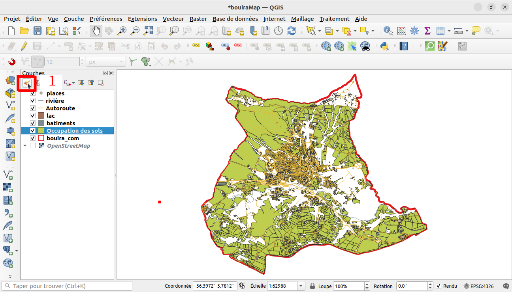
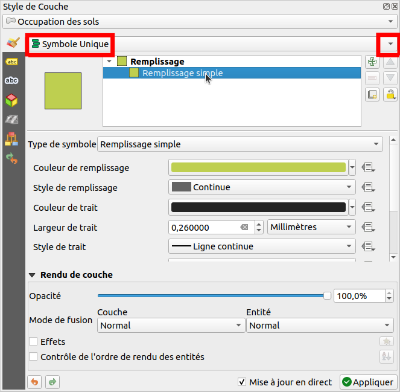
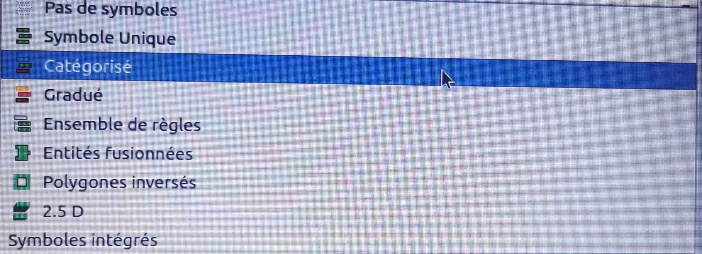
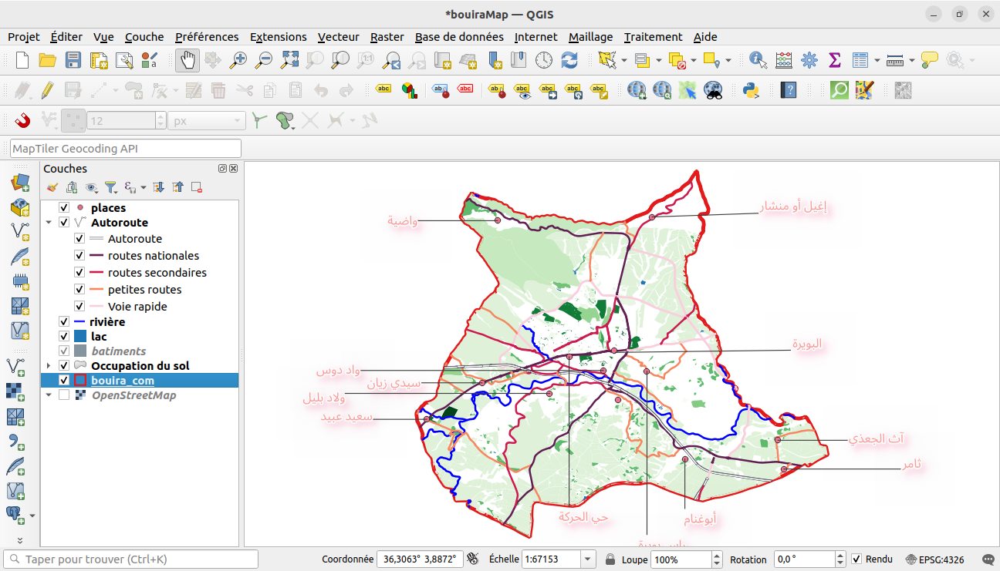

Découper les excédents de couches qui dépassent les frontières de la commune en utilisant
l'algorithme Intersection
cet algorithme extrait les parties superposées des entités dans les couches en entrée et en superposition. Les entités de la couche en superposition en sortie se voient attribuer les attributs des entités superposées de la couche en entrée et de celle en superposition.
Procéder de même façon pour réaliser l'intersection des autres couches avec la couche commune de Bouira
la carte précédente est propre. Toutes les couches sont à l'intérieur de la limite administrative de la commune. mais l'apparence visuelle ne reflète pas ce que la carte représente! D'où vient l'importance de la symbologie
Vérifier que la couche occupation du sol est selectionnée puis cliquez sur le paneau Style de Couche
Cliquez sur la flèche à droite de la liste déroulante (Symbole Unique)
Selectionnez l'option catégorisé
Astuce: Eliminez les lignes (les contours) entre les différentes zones de la couche landuse afin de rendre la carte visuellement moins encombrée.
Changez la couleur de la couche eau en bleu clair. Essayez d’utiliser le menu Propriétés de la couche au lieu du paneau Style de Couche.
Changez à nouveau la symbologie de la couche eau pour qu’elle ait un contour bleu plus foncé.
Changez la symbologie de la couche rivière en une représentation adéquate avec les cours d’eau.
Changez la couleur de la couche batiments en gris clair, et la couleur des contours en un gris ligèrement plus foncé.
Remarque: la couche batiments encombre la carte unitlement, nous pouvons décider de cacher les bâtiments à la vue à petite échelle. Procédez comme suit:
Ouvrez la fenêtre Propriétés de la couche pour la couche batiments (occupation du sol).
Activez l’onglet Rendu.
Activez le rendu basé sur l’échelle en cliquant sur la case à cocher intitulée Visibilité dépendante de l’échelle :
Changez la valeur de Minimum à 1:10000.
Cliquez sur OK.
Stylisez la couche Autoroutes par catégorée (voir landuse)
Vous pouvez ajouter des étiquettes à la couche place (géométrie de type points)pour indiquer le nom de la place
Pour créer une mise en page de la carte Suivez la vidéo:
La carte est enfin prête pour l’exportation ! Vous verrez les boutons d’exportation dans le coin supérieur gauche de la fenêtre de mise en page :